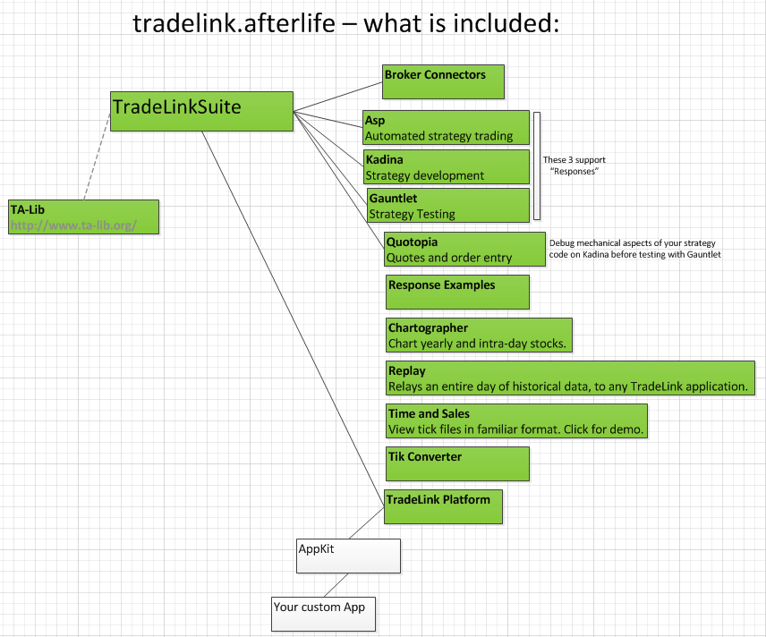
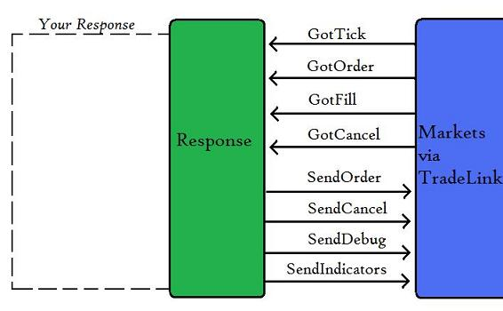

Before reading the rest you'd familiarize yourself with some tradelink-specific vocabulary:
----------------------------------------------------------------------------------------------
Response - Is basically your algo-trading idea-in-action. It can be automatic or semi-automatic.
Written in C# and compiled as dll.
It based on event-driven prograddming.

Response can not run by itself. You'll need Kadina or ASP to run your response for you.
ASP - Application capable of executing several responses agains real-time data stream from broker.
When you happy with your well tested strategies, it is ASP which will orchestrate the automated trading for you and make you rich!-)
Kadina - Can replay historical *.TIK file(s) against you response for backtesting purposes.
Broker Connector - Application which connects to the broker's API and delivers all the required
messages/events from-to your response. Think of it as an adapter or bridge
which translates broker-specific way of calling things and unify them, so
any tradelink.afterlife app (like Chartographer, Quotopia or ASP) can talk
to any supported broker without knowing low level communication details/requirements.
TickConverter -
Chartographer -
Quotopia -
Glean - (not part of "afterlife" edition of tradelink) is a name of application (not free app) for designing responses
in visual GUI without any programming skills. Just drug-n-grop element of you strategy, connect them in a proper way
add necessary parameters and pay Pracplay for real-time usage and it suppose to do the trades for you! Good idea!
PracPlay - company which created original tradelink suite (2005?-1013).
At some point they added Glean as a part of tradelink open source suite, but Glean was proprietary thing which
you supposed to pay license fee for real-time trades. On 18-Sep-2013 whole svn repo was "flattened" (no more history available)
and commiter "Joshua Franta" (basically the owner and author of tradelink) put the following
comments: "removing sensitive passwords/sensitive info", but PracPlay also deleted ASP, Kadina, Quotopia. They basically
crippled the whole idea of TradeLink without anouncing thiers plans!
--------------------------------------------------------------------------------------
[Q] How to "INSTALL / RUN" tradelink.afterlife?
[A] There's no installation required. Just compile from sources and run.
tradelink.afterlife for now consist of 3 separate MS Visual Studion solutoins:
(I use MS Visual Studio Ultimate 2012 v 11.0.something for all of'em)
1) TWSServer is a separate c++ project (also known as IB connector). It can be opened by:
C:\tradelink.afterlife\BrokerServers\BrokerServers.sln
Solution contains:
TWSServer
TradeLibFast
TestTradeLibFast
TWSServer depends on TradeLibFast and does not recompile dependencies automatically, so if you
modify TradeLibFast don't forget to rebuild it prior to rebuilding TWSServer.
2) tradelink.afterlife suite is a separate c# solution (former known as just "tradelink"). It can be opened by:
C:\tradelink.afterlife\TradeLinkSuite.sln
3) optoinal: C:\tradelink.afterlife\_storage_service\storage_service.sln
Which will subscribe to all messages emmited by response -> RabbitMQ and will store them all into MongoDB.
[It is only required if you inted to use rabbitmq + mongodb]
You have 2 alternatives:
a) run against real-time subscribed data or
b) backtest on previously stored TIK files
To have tradelink.afterlife working for you with real-time data:
1) download project (by 'git clone' or hit "download ZIP button" on github)
projcet url: https://github.com/shevkoplyas/tradelink.afterlife
2) open TWS (IB java app) and set up access to it's API
4) open, compile and run BrokerServers solution:
C:\tradelink.afterlife\BrokerServers\BrokerServers.sln
It will connect to TWS (see messages on the connector screen).
5) Open C:\tradelink.afterlife\TradeLinkSuite.sln and compile whole solution (including Responses sub-project)
6) Run ASP app (it is part of suite)
7) Load responses via running ASP from C:\tradelink.afterlife\Responses\bin\Debug\Responses.dll
8) add symbols to feed into your response (try right mouse click on loaded response line in ASP)
9) observe trades done in TWS (there's no good viewer in TradeLink.afterlife suite)
[10) optionally you'd start mongodb and rabbitmq for responses that emit messages to rabbitmq, but I'll desrcibe this saparately (later if anyone interested at all).]
Or you can just start Kadina without even having any TWS, IB-connector and Internet :)
and then just feed it with selected response along with TIK file(s) for backtesting.
Roadmap:
- build viewer for tradelink
- make subscription process more smooth
- add historical data digger (it'll get 30sec bars for 1yr for bunch of tickers)
and convert each bar to 4 ticks (very brutal approximation, but good enough to check some ideas)
(this whole history diggin will be no longer required after you became profitable and just buy good subscription;)
Open questions:
- how do we trade options via tradelink.afterlife?